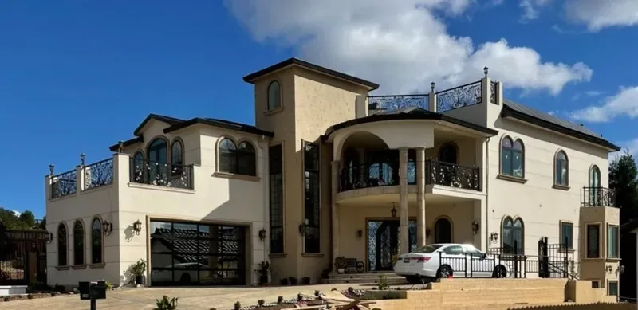
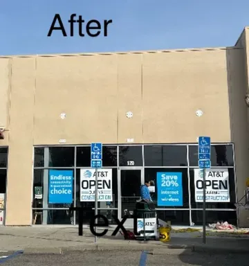
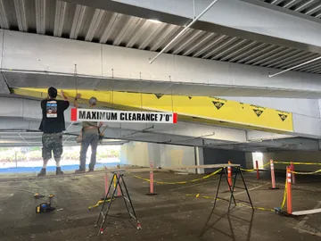
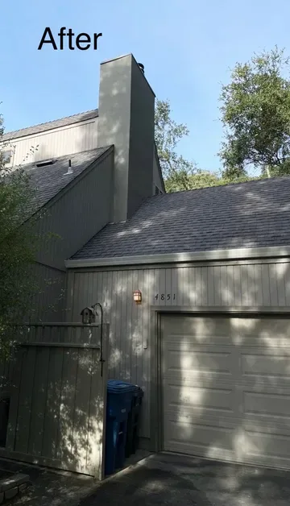
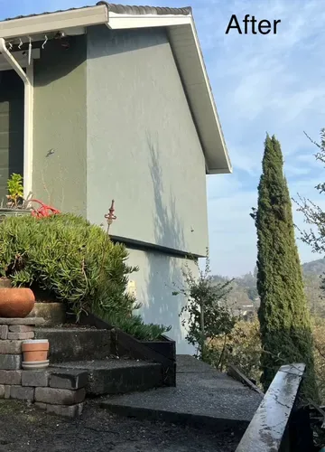

Detect
Systematic inspection of the envelope — cladding, flashings, penetrations, and transitions — to locate the actual water entry point, not just the visible symptom. Where evidence warrants, controlled discovery confirms the failure path.
Fogg Construction brings 41 years of diagnosis-first stucco and waterproofing work to Bay Area buildings — during repair or remodeling, finding where moisture actually enters, correcting the failed detail, and finishing plaster so the repair disappears. Trusted by architects, owners’ reps, and property managers.

Barrier, lath, flashing, stucco, and plaster handled as a single integrated scope — no gap between the trade that keeps water out and the trade that makes the wall look right.
Selected commercial and residential corrections — each one starts with what was wrong and ends with a wall that stays dry.

Severe water leaks were compromising the building’s structure, and the source wasn’t visible from the surface. The repair had to be right — a retail storefront can’t keep closing for the same leak.
Open case file →
A newly installed structural steel beam at the mall’s parking structure stood out starkly against the existing finished beams. It needed to disappear into the architecture.
Open case file →
The brick facade was leaking, and the conventional quote for a problem like this is full removal — an enormous cost. The owner needed to know whether the structure could be saved.
Open case file →
Invasive vines had penetrated cracks in the stucco and compromised the water barrier beneath. Left alone, the damage would have spread; quoted conventionally, it meant full stucco removal.
Open case file →Water rarely shows up where it gets in. Repairing the symptom without finding the entry point wastes money and leaves the real failure in place — so we work in this order, on every project.
Systematic inspection of the envelope — cladding, flashings, penetrations, and transitions — to locate the actual water entry point, not just the visible symptom. Where evidence warrants, controlled discovery confirms the failure path.
Corrective work scaled to the real problem: barrier and flashing rebuilt at the failure, framing repaired where discovery demands it, and the repair scope kept proportionate — never the worst case by default.
Stucco and plaster finished to match the existing texture and color, so the correction performs better than original and reads invisible in the finished wall.
CSLB License #844981 (B — General Building, C35 — Lathing & Plastering), insured, with professionalism and peace of mind built in.
41+ years in the waterproofing and plaster trades — diagnosis and craftsmanship that only time on the wall can teach.
At home working with architects, designers, owners’ reps, and owners directly — special care for details and changes within schedule and budget.
Outcomes delivered within the schedule parameters and budgets the project was planned around.
“They were fantastic! The owner came out himself to bid the job, threw in some stucco patchwork that was needed outside of the immediate area to be fixed. The crew was on time, worked quickly, and didn’t leave any debris behind (cleaned up the area perfectly). Not the cheapest, not the most expensive either, but the expertise and skill was evident and I couldn’t be happier. I highly recommend Fogg.”
A stain, a recurring leak, cracking around the windows — describe the symptom and where it shows up. We’ll bring 41 years of diagnostic experience to finding the cause, and an honest scope for fixing it.
Prefer to talk? 415-827-0782 · Mon–Fri 7AM–5PM